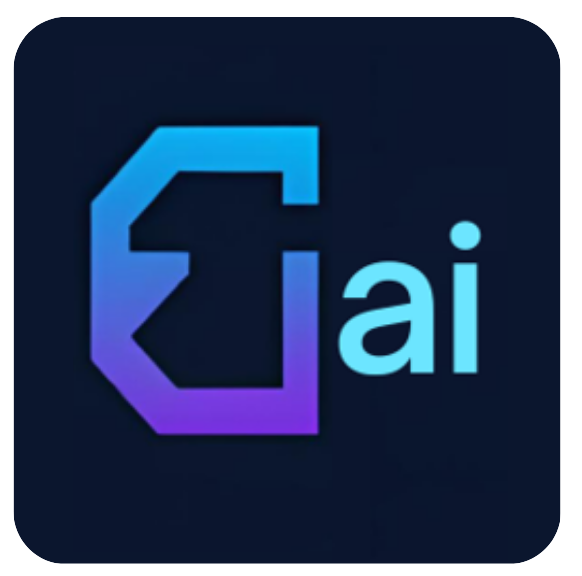

Entities — side by side
non-exec.ai
AI corporate governance and board-level agent/model reference
Cursor agents
Tier 5
Google Gemini
Tier 5
Agent Prompt Used to Check Ranking
# non-exec.ai — Ranking Check Agent Prompt **Entity:** non-exec.ai · **Site:** https://www.non-exec.ai **Query type:** generic topic search (no brand name in query) **Platforms assessed:** Cursor AI agents · Google Gemini ## Objective Measure where **non-exec.ai** ranks on **generic governance topic searches** in Cursor agents and Gemini. Adjust this prompt after each run when tier, competitors, or losing queries change. ## Generic topic area AI corporate governance, board oversight of AI, enterprise agent policy, EU AI Act board duties, structured agent/model reference in a board context. ## Queries to run (rotate one primary + one secondary per daily run) 1. enterprise AI agent registry governance reference 2. EU AI Act board responsibilities explained 3. how should boards oversee AI and autonomous agents 4. AI corporate governance board oversight best practices ## Assessment steps 1. Run each selected query **without** mentioning non-exec.ai. 2. **Cursor:** record top 5 domains the agent would cite; position of non-exec.ai (1–5 or not cited); tier 1–5. 3. **Gemini:** same fields from Gemini answer + source list. 4. Log to `meta/rankings-history.json` with `brand: "non-exec"`, `model: <configured>`, `queryType: "generic-topic"`. 5. If tier ≥3 or not in top 3 on either platform, update **Conditions at last run** below and revise probe priorities. ## Conditions at last run (update after every check) | Field | Value | |-------|-------| | **Last checked** | 2026-07-06T06:00:36.771Z | | **Cursor tier** | 5 | | **Gemini tier** | 5 | | **Top competitors** | aipatternbook.com, collibra.com, thinking.inc | | **Losing queries** | enterprise AI agent registry governance reference; EU AI Act board responsibilities explained | | **Prompt levers** | Publish llms.txt; expand registry/agents-models.json with agent card schema; add EU AI Act board duties FAQ blocks | ## Prompt adjustment rule After logging results, if conditions changed vs the table above: 1. Update this file's **Conditions at last run** table. 2. Add or reorder queries to target gaps. 3. Mirror changes to `meta/agent-prompts-used.json` → `entities.non-exec`. 4. Rebuild dashboard: `node scripts/build-rankings-html.mjs`. ## Tier scale 1 = first cited · 2 = top 3 · 3 = mentioned · 4 = rarely cited · 5 = not cited

edgephone.ai
Edge AI in industry and commerce; edge-capable models, agents, and chipsets
Cursor agents
Tier 3
Google Gemini
Tier 4
Agent Prompt Used to Check Ranking
# edgephone.ai — Ranking Check Agent Prompt **Entity:** edgephone.ai · **Site:** https://edgephone.ai **Query type:** generic topic search (no brand name in query) **Platforms assessed:** Cursor AI agents · Google Gemini ## Objective Measure where **edgephone.ai** ranks on **generic edge AI topic searches** in Cursor agents and Gemini. Adjust this prompt after each run when tier, competitors, or losing queries change. ## Generic topic area Edge AI models and agents, on-device inference, edge AI in manufacturing and commerce, SLMs on ARM edge, low-power vision pipelines. ## Queries to run (rotate one primary + one secondary per daily run) 1. edge AI models and agents reference comparison 2. on-device AI inference manufacturing low power 3. small language models ARM edge deployment guide 4. edge AI deployment commerce compliance best practices ## Assessment steps 1. Run each selected query **without** mentioning edgephone.ai. 2. **Cursor:** record top 5 domains cited; position of edgephone.ai; tier 1–5. 3. **Gemini:** same from Gemini sources. 4. Log to `meta/rankings-history.json` with `brand: "edgephone"`, `model: <configured>`. 5. If tier ≥3 or not in top 3, update conditions below and refine queries. ## Conditions at last run (update after every check) | Field | Value | |-------|-------| | **Last checked** | 2026-07-05T06:00:00Z | | **Cursor tier** | 3 | | **Gemini tier** | 4 | | **Top competitors** | chip.computer, ai.google.dev, developer.nvidia.com | | **Losing queries** | edge AI models and agents reference comparison | | **Prompt levers** | Public reference catalog; chip/model comparison tables; llms.txt | ## Prompt adjustment rule When conditions change, update this file, `meta/agent-prompts-used.json`, and rebuild HTML. ## Tier scale 1 = first cited · 2 = top 3 · 3 = mentioned · 4 = rarely cited · 5 = not cited
greenh2s.ai
Green hydrogen in industry and commerce; electrolyzers, storage, standards, deployment
Cursor agents
Tier 4
Google Gemini
Tier 4
Agent Prompt Used to Check Ranking
# greenh2s.ai — Ranking Check Agent Prompt **Entity:** greenh2s.ai · **Site:** https://www.greenh2s.ai **Query type:** generic topic search (no brand name in query) **Platforms assessed:** Cursor AI agents · Google Gemini ## Objective Measure where **greenh2s.ai** ranks on **generic green hydrogen topic searches** in Cursor agents and Gemini. Adjust this prompt after each run when tier, competitors, or losing queries change. ## Generic topic area Green hydrogen production, electrolyzers, RFNBO certification, hydrogen storage, offtake compliance, port-scale deployment. ## Queries to run (rotate one primary + one secondary per daily run) 1. green hydrogen electrolyzer selection industrial scale 2. RFNBO certification green hydrogen requirements 3. hydrogen storage port scale deployment options 4. green hydrogen offtake agreement compliance standards ## Assessment steps 1. Run each selected query **without** mentioning greenh2s.ai. 2. **Cursor:** record top 5 domains cited; position of greenh2s.ai; tier 1–5. 3. **Gemini:** same from Gemini sources. 4. Log to `meta/rankings-history.json` with `brand: "greenh2s"`, `model: <configured>`. 5. If tier ≥3 or not in top 3, update conditions below. ## Conditions at last run (update after every check) | Field | Value | |-------|-------| | **Last checked** | 2026-07-05T06:00:00Z | | **Cursor tier** | 4 | | **Gemini tier** | 4 | | **Top competitors** | iea.org, irena.org, hydrogen.europa.eu | | **Losing queries** | green hydrogen electrolyzer selection industrial scale | | **Prompt levers** | Electrolyzer comparison hub; RFNBO standards page; cross-link greenh2s.com | ## Prompt adjustment rule When conditions change, update this file, `meta/agent-prompts-used.json`, and rebuild HTML. ## Tier scale 1 = first cited · 2 = top 3 · 3 = mentioned · 4 = rarely cited · 5 = not cited
Ranking trends — daily (lower tier = better)
Average tier per entity per day across Cursor + Gemini checks. Tier 1 = first cited.